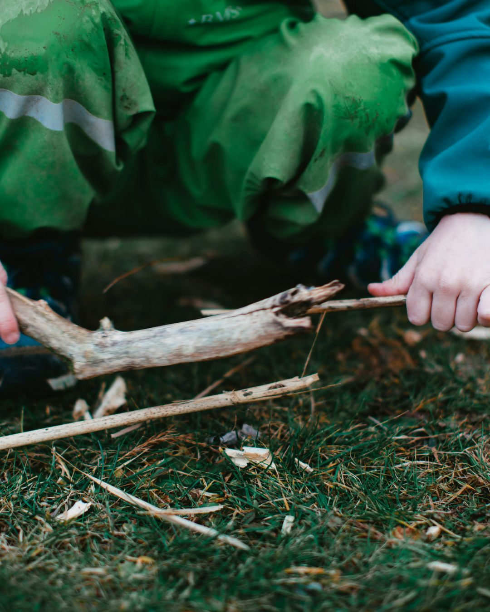

If you've been lying awake wondering whether what you're seeing in your child is something more — you're in exactly the right place. Honest, jargon-free information for parents of neurodiverse children aged 2–10.
Maybe it started with a comment from a teacher. Or a birthday party where things just felt... harder than they should. Maybe you've been quietly Googling at midnight. Whatever brought you here, you belong here.
Honest, practical, and easy to navigate even when your brain is fried from a difficult day.
Plain-English guides for parents. What it actually looks like day to day, early signs by age, and what to do first in the UK.
The supermarket meltdown. The morning routine that takes two hours. What's neurologically happening — and what to try.
Charities, NHS pathways, school support, Right to Choose, private assessment routes, and crisis services — all in one place.
What nutrition, sleep, and lifestyle can — and genuinely cannot — offer. Evidence-aware, guilt-free, and grounded in reality.
For the part of this that doesn't fit neatly into a GP referral. Real parents, no scripts, no gold star for coping well.
Step-by-step from first GP visit to diagnosis and beyond. NHS and private routes explained clearly.
One of the things parents of neurodiverse children say over and over again is how lonely it can feel — even when you're surrounded by people who love you. That's why community is at the heart of Spectrum Kids Hub.
In our peer support spaces, you'll find parents who truly get it — because they're living it too. No judgement. No scripts.

There's a growing body of evidence that diet, gut health, sleep, movement, and lifestyle can play a meaningful role in how neurodiverse children feel day to day. Not as a cure — but as one part of a bigger picture of wellbeing.
Sometimes small, sustainable changes in how a family eats, sleeps, and moves can make the difficult days feel just a little more manageable.
My name is Marie Frost, I'm a parent at the beginning of my own journey, just like many of you reading this. I started building this site partly because my previous career was tech, and partly to make sense of everything I was learning, and because building something useful is how I cope, in fact I started creating this one evening when I was stuck in a room for hours trying to get my defiant 6 year old to sleep (all on my phone using code and AI - it was a nice distraction from reality).
I'm also a nutritional therapist and health coach, so the diet and lifestyle content comes from a place of genuine professional knowledge as well as personal experience. But everything else — the assessment guides, the education stuff, the emotional bits — that's me learning alongside you.
This site grows as my journey does. It's a living thing — not a finished product.
Spectrum Kids Hub a peer-to-peer space — me sharing what I'm learning, others sharing what they know, and all of us building something better together. FYI I will be adding a support section for parents in soon, because if we ignore our needs we can't be there for our kids and I see this often - I initally did it myself too, we can't support them from an empty cup.
If you have something to add — a resource, a correction, a story, an idea — reach out. This is yours as much as it is mine.